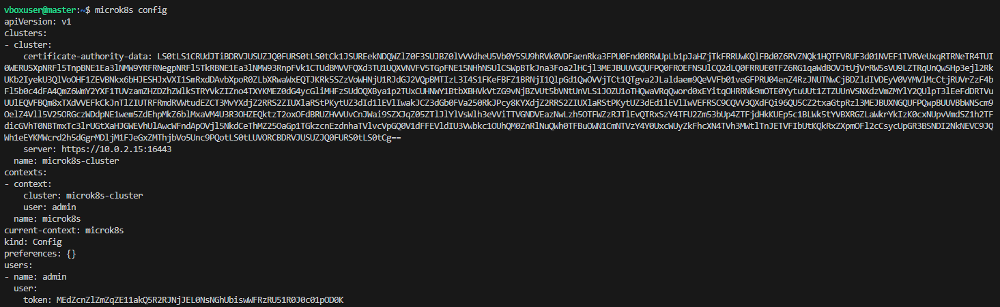
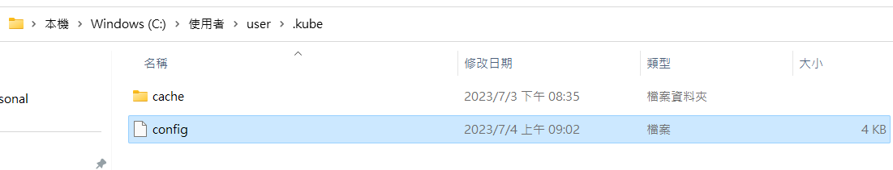

Dapr
如何在 Ubuntu 安裝 Java 11
sudo apt-get update
sudo apt-get install openjdk-11-jdk
Deploy Dapr on K8S
參考 https://docs.dapr.io/operations/hosting/kubernetes/kubernetes-deploy/
預設 dapr-dashboard 沒有對外開端口，所以要在本機執行 kubectl port-forward
如何在本機使用 kubectl port-forward，以 service/{myservice} 為例
- 確認 C:\Users\user.kube 檔案的資訊，為 microk8s config 的資訊



-
執行指令：
kubectl port-forward service/dapr-dashboard 8080:8080 -n dapr-system -
打開本機瀏覽器 http://localhost:8080